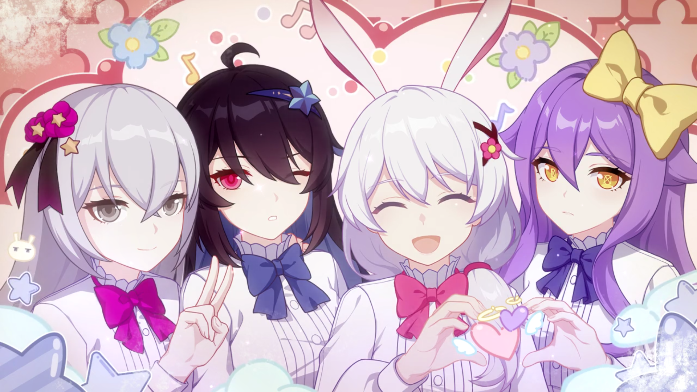
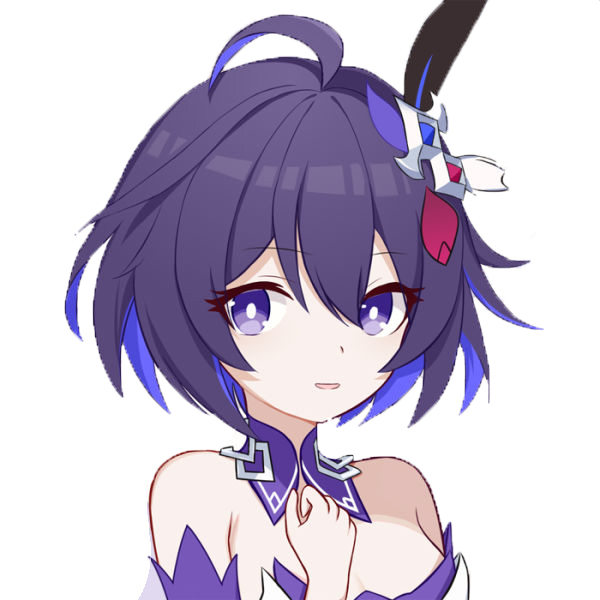

希儿在懂事时便已经来到了可可利亚孤儿院，从未见过外面的世界，因为自己年纪小而且性格温柔软弱所以一直被当成那个被照顾的角色，直到布洛妮娅偷袭可可利亚失败被带到了孤儿院的那刻。希儿起初对像狼一样锐利的布洛妮娅感到害怕，但是在和布洛妮娅的相处中逐渐认识到布洛妮娅的温柔并将她当做自己的姐姐和希望。希儿曾经教过布洛妮娅制作胡萝卜甜菜汤，布洛妮娅也曾和希儿约定好要骑摩托车带希儿去看海。
布洛妮娅曾经伪装成圣诞老人送给希儿一个精美的发饰，希儿当时看到了布洛妮娅面上露出一丝不易察觉的笑容但并未多想，直到现在希儿还相信世上有圣诞老人。
后来在杏的挑衅下希儿的里人格现身，并用圣痕力量加速细胞凋零拔掉杏的牙并进入了杏的精神世界和杏进行了一番友好交流。随后希儿得知了x-10实验并抢先一步提前参与了实验，在实验即将成功之际身体因承受不住强大的力量而进入量子化。在里人格希儿的帮助下希儿最终消散在布洛妮娅和希儿的房门前，只留下了布洛妮娅送给希儿的发饰（圣诞礼物）。

